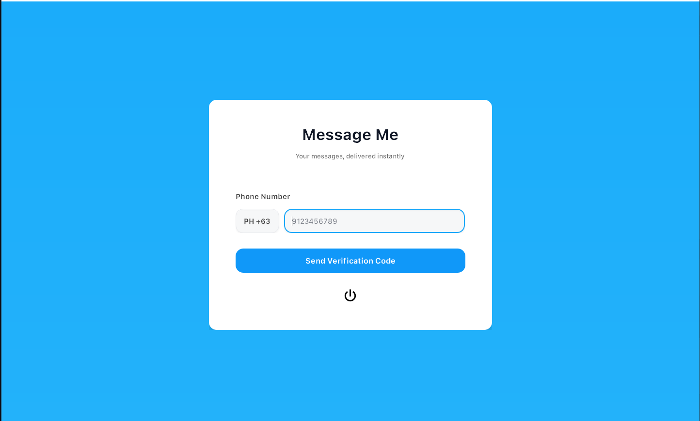
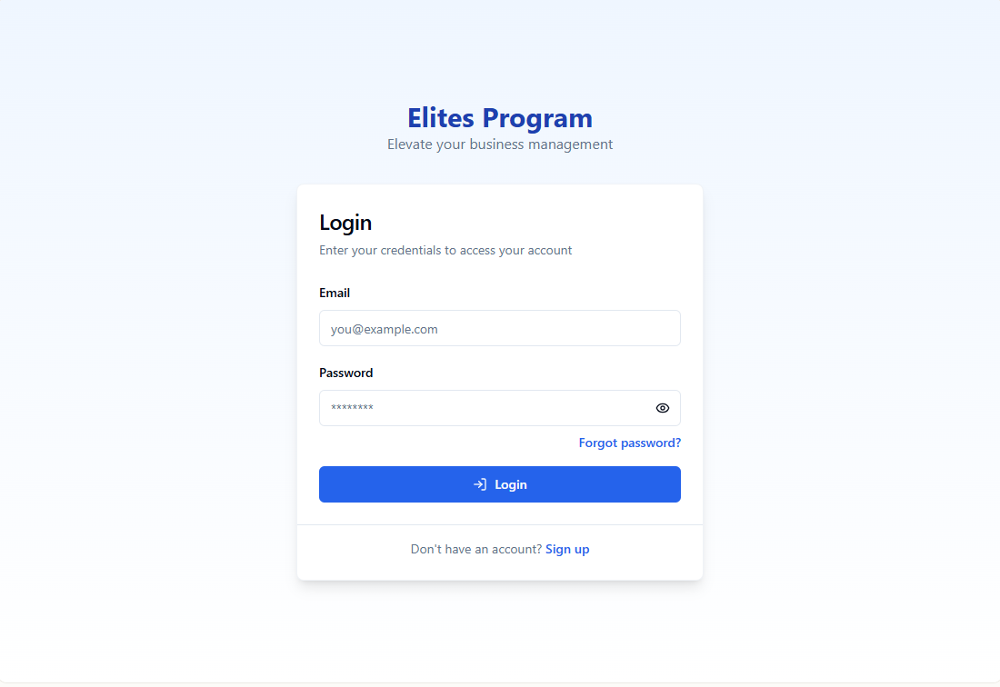

Hello, I'm Dan Ysrael Aguila
BSIT Student • Aspiring Cybersecurity & IT Professional
Passionate about technology, security, and creating efficient, modern software solutions.
View My ProjectsBSIT Student • Aspiring Cybersecurity & IT Professional
Passionate about technology, security, and creating efficient, modern software solutions.
View My Projects
Hello! I'm Dan Ysrael Aguila, a BSIT student passionate about Information Technology, Cybersecurity, and Web Development. I enjoy learning new technologies and applying them to real-world projects.

PyQt5-based messaging tool for sending SMS using API integration.

Product & price management system with authentication.
What is IT Security? Information assurance is the practice of ensuring and managing risks related to the use, processing, storage, and transmission of information or data.
Information must only be available to authorized parties. Examples: Messages, personal data, healthcare records, intellectual property.
Access Control Methods: Passwords, Two-factor authentication (2FA), Data encryption.
Information must remain consistent, trustworthy, and accurate. Examples: Bank transactions, document editing, online reviews, database management.
Access Control Methods: Data validation, Version control systems, Hashing/Checksums.
Information must remain accessible to authorized parties even during failures. Examples: Healthcare systems, online shopping websites, cloud services.
Access Control Methods: DDoS Protection, Backups, Load balancer.
What is Cybersecurity? The practice of protecting computer systems, networks, and sensitive data from theft, damage, or unauthorized access.
People, Processes, Technology.
Tier 1: Alert Analyst, Tier 2: Incident Responder, Tier 3: SME/Hunter, SOC Manager.
Red Team (Offense) vs Blue Team (Defense) to improve security posture.
Converts plain text data into unreadable format using a key.
Verifying identity of user or system.
Ensuring data is not modified during transmission or storage.
Guaranteeing sender cannot deny sending a message.
Creates unique fixed-length output for data integrity verification.
Symmetric (AES, DES) & Asymmetric (RSA, ECDSA) encryption.
Diffie-Hellman protocol for shared secret key.
End-to-end & Transport encryption.
X.509 certificates validate authenticity and integrity.
Type 1 (Bare-metal) and Type 2 (Hosted) hypervisors.
Cloud storage: OneDrive, File Sync, CDN.
Ensures secure device access to resources, single sign-on, malware scanning, and monitoring.
Protecting websites, apps, and services from unauthorized access or attacks.
Confidentiality: encrypted online banking
Integrity: digital signatures for transactions
Availability: redundant servers, DoS protection
Security checklist for web application risks.
Case Study: Blackcat ransomware attack on Change Healthcare.
Attack exploiting unsafe user input to execute arbitrary OS commands.
Argument Injection & Command Injection.
Output encoding, escaping, parameterization, input validation, principle of least privilege.
SQL is used to interact with relational databases.
SQL Injection occurs when inputs alter query logic.
Data breach, corruption, DoS, system compromise.
Prepared statements, input validation, stored procedures, least privilege.
Improper input neutralization in web pages allowing attacker scripts.
Cookie theft, session hijacking, injecting malicious content, keylogging.
Allows attackers to access files outside intended directories.
Canonicalization, input validation, sanitization, safe APIs, testing tools.
Capturing, inspecting, and analyzing network data flow. Characterizes common ports and protocols, establishes network baselines, monitors threats.
Monitoring workstations and analyzing event logs is crucial to detect attacks and unauthorized activity.
Aggregating logs and analyzing them provides a complete attack chain overview.
Email: danysrael720@gmail.com
Phone: +63 946 572 0261